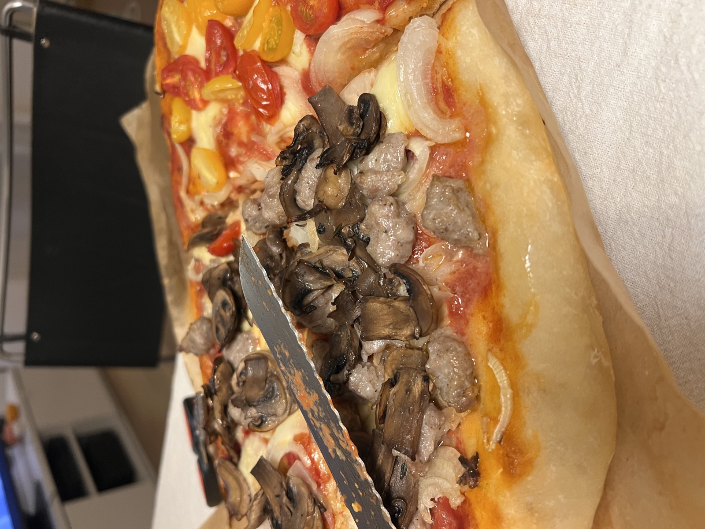

Impasto ad alta idratazione (75%) con 24 ore di lievitazione, quasi tutte in frigo. Pizza alta, soffice dentro e croccante sotto.

Foto: la nostra pizza
Teglie
1
Teglia
30×40 o 35×40 cm
Idratazione
75%
Tempo
~24 ore
Ingredienti
Impasto
Farina 0 o 00 forte (W 260–300)500 g
Acqua fredda375 ml
Lievito di birra secco (o fresco)1,5 g · fresco 3,5 g
Sale fino14 g
Olio extravergine d'oliva20 ml
Impasto finito: circa 910 g.
Teglia e condimento
Olio extravergine per la teglia2 cucchiai
Passata di pomodoro (salata e con un filo d'olio)200 g
Mozzarella fiordilatte, a pezzi e scolata qualche ora prima250 g
Origano e basilico1 cucchiaino
Procedimento
ImpastaMetti da parte circa 50 ml dei 375 ml di acqua. Nel resto sciogli 1,5 g di lievito secco (o 3,5 g di fresco), aggiungi 500 g di farina e mescola finché non resta farina asciutta.
RiposoCopri e lascia riposare 30 minuti.
Sale e olioAggiungi 14 g di sale con l'acqua tenuta da parte, poi 20 ml di olio a filo. Lavora finché l'impasto è liscio ed elastico: resterà morbido e appiccicoso, è normale.
PiegheFai 3 giri di pieghe, uno ogni 20 minuti: con le mani bagnate tira un lembo d'impasto, ripiegalo sopra e gira la ciotola, fino a fare tutto il giro.
FrigoMetti l'impasto in un contenitore unto e chiuso, in frigo per circa 20 ore.
FormaTogli dal frigo e forma 1 panetto (uno per teglia, circa 900 g l'uno). Arrotonda ogni panetto e lascialo coperto in un contenitore unto a temperatura ambiente per circa 3 ore.
StendiUngi la teglia con 2 cucchiai di olio, adagia il panetto e allargalo con i polpastrelli fino ai bordi. Se si ritira, aspetta 10 minuti e riprova. Lascia riposare ancora 30 minuti.
Prima cotturaScalda il forno statico al massimo (250–270 °C). Condisci con 200 g di passata e cuoci sul ripiano più basso per circa 15 minuti.
FinituraAggiungi 250 g di mozzarella, 1 cucchiaino di origano e il basilico, sposta a metà forno e cuoci altri 5–7 minuti, finché la mozzarella fonde.
Tabella di marcia
Giorno 1, ~21:00Impasto, riposo e pieghe
Giorno 1, ~22:30In frigo
Giorno 2, ~18:00Fuori dal frigo, arrotonda il panetto
Giorno 2, ~21:00Stendi in teglia, 30 minuti di riposo, poi in forno
Note
Con così poco lievito le 24 ore vanno passate quasi tutte in frigo: a temperatura ambiente l'impasto lieviterebbe troppo.
Versione in giornata: usa il doppio abbondante di lievito secco (3,5 g), salta il frigo e lascia lievitare 2–3 ore finché raddoppia, poi riprendi dal passaggio «Forma».
Se fai più teglie, cuocile una alla volta sul ripiano basso: è lì che la pizza diventa croccante sotto.